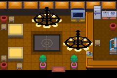

051 聂梓的签名
一句话目标：帮满金市的追星女孩要到伽勒尔创作歌手聂梓的签名。
接取地点
准备条件
- 她的说法：周日去参加酒吧的活动，遇到聂梓的概率会大一些。
操作步骤
- 在满金市酒吧附近与追星女孩对话接取任务。她称聂梓是“伽勒尔地区乃至全世界最知名的创作歌手”，并说“有人声称周日的时候在酒吧遇见了聂梓大人”，请你帮忙要一张签名。
- 周日前往满金市酒吧参加活动（酒吧为室内场景 55:6，可由满金市东北侧一带进入）。
- 在酒吧内遇到聂梓并索要签名：对白「什么……想要签名吗？我明白了。」随后「得到了聂梓的签名！」。
- 带签名回满金市，把签名交给追星女孩。
交付检查
把签名交给满金市的追星女孩，获得谢礼，任务完成（旗标 5987）。完成对白：「有了聂梓大人的签名，我以后一定能加入呐喊队吧！」
奖励
容易卡住的位置
- 中途脚本含若干训练家对战与一个酒吧活动计数变量（20884），本包未给出可确证的触发条件；先按“周日去酒吧参加活动”推进。
- 聂梓出现与签名脚本（0x08AEEEA6）的确切触发条件未在本包定位。
来源与待补字段
- 来源包：data/quest_packets/051.json。
- 待补：酒吧内聂梓出现的触发条件（周日 / 活动计数变量 20884）；trainerbattle0 引用的 920、921 不在导出训练家表内；酒吧入口在满金市的确切位置。
地点地图
共享RGB底图；点击可缩放定位。数字对应本页相关地点，不代表地图上全部事件。
满金市·酒吧所在城区


1 聂梓的签名（39,37）
满金市

1 聂梓的签名（7,8）